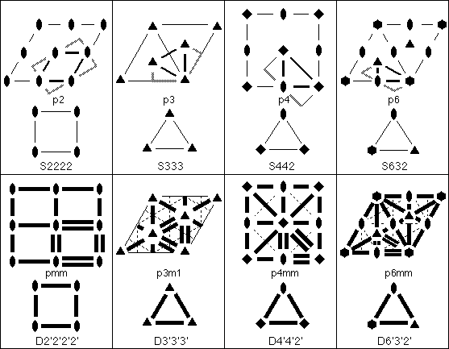

Crystallographic Topology 101
Crystallographic Topology 101

There are 17 plane groups (wallpaper groups) defining the symmetry in all patterns that repeat by 2-dimensional lattice translations in Euclidean 2-space. We will derive the 17 Euclidean 2-orbifolds directly from standard crystallographic plane group drawings, but first we illustrate some basic surfaces of topology.
Surface Topology
Fig. 2.5 illustrates how rectangles when wrapped up to superimpose identical edges give rise to five basic topological surfaces present in the plane group orbifolds. The other two surfaces needed are the the 2-sphere and 2-disk discussed previously in Sect. 2.1. The arrows on the edges of the rectangles indicate directional specific patterns that are to be superimposed and glued together. A surface illustration of the Klein bottle also is shown in the header of these web pages. The projective plane surface construction is illustrated in two steps. The intermediate stage is a sphere with a hole in it that has an antipodal relationship along the gluing edge of the hole; i.e., every point on the edge is identical to the corresponding point 180o from it along the edge of the hole. This can be considered an antipodal operation along the edge. The final step closes up the hole by puckering two opposite points down while the two other points 90o from the first pair are puckered up, forming a pinched light bulb type end called a crosscap. For graphical simplicity, we will always draw the projective plane using the intermediate stage which has the antipodal gluing edge unmated.
Plane Group Orbifolds
Crystallographers have specific symbols for the geometrical symmetry operators
corresponding to 2-, 3-, 4-, and 6-fold rotations (polygons);
mirrors (heavy lines); and glides (dashed lines) along with
conventions for how the symmetry drawings are laid out (Hahn, 1995).
In Fig. 2.6. the double lines indicate where folding takes place, and
the shaded lines are where cutting is done. After cutting, symmetry
equivalent edges are pasted together to form the Euclidean 2-orbifolds at
the bottom of each box.
The notation under the crystallographic drawing is the standard plane group
name and that under the orbifold drawing is our notation for the Euclidean
2-orbifold with S, D, and RP denoting sphere, disk, and real projective plane,
respectively. "Möbius" denotes a Möbius band with
1 silvered edge, and "Annulus" denotes an annulus with 2 silvered edges.
S2222, S333, etc. are called pillow orbifolds and have the constraint
that for Sijk..., (i-1)/i + (j-1)/j + (k-1)/k + ... = 2. Heavy lines and
circles indicate
mirrors, and a heavy dashed circle, arising from a glide, signifies a
projective plane antipodal boundary. Primed numbers indicate the corresponding
rotation axis lies in a mirror forming a dihedral corner, and unprimed
numbers indicate cone points.
The spherical orbifolds in the third row are derived by using straight
line cuts through 2-axes and appropriate angular cuts at other axes to
leave some flaps which are then glued together to produce the 4- and
3-cornered pillow spherical orbifolds. The diskal orbifolds on row four
simply require cutting along the double lines in the plane group
drawings. The remaining diskal orbifolds (rows one and two)
are derived by cutting along
the double lines and along appropriate angles through the single axis
pointed to by vectors perpendicular to the ends on double lines, then
closing up the cut edges through the axis to form a complete silvered
boundary.
The annulus and Möbius band in row one
are derived from plane groups pm and cm
by first cutting out an asymmetric unit bounded by those portions of the
mirrors denoted by double stripes and matching the ends together as
indicated in Fig. 2.5. The torus and Klein bottle asymmetric units
require the whole and 1/2 unit cell, respectively, each folded as
indicated in Fig. 2.5.
The apparent self-intersection in the Möbius band is just a
limitation of illustration techniques. The rules are that a manifold
(or orbifold) can be embedded in whatever dimension Euclidean space is
required. The Klein bottle (and the projective plane) can be mapped into
4-dimensional Euclidean space
with no self-intersections.
The Projective Plane
For the projective plane orbifold, RP22, 1/4 of the unit cell is required
for the asymmetric unit. At first we choose an asymmetric unit with a
2-axis on each corner and fold up as indicated in Fig 2.5. This places
all four 2-axes on the dashed circle where the antipodal relationship
holds so that it looks pictorially like the D2'2'2'2' symbol with the
dashed boundary replacing the mirror boundary. However, we then note
that by moving the asymmetric unit one quarter cell in either the x or y
direction, there are now two 2-fold axes centered on opposite sides
of the asymmetric unit as shown in Fig. 2.6.
Folding about these 2-fold axes positions them in the
interior of the orbifold as shown in the RP22 orbifold figure and there is
still an antipodal relationship along the gluing edge.
Thus, we can push two nonequivalent pairs of equivalent
axes off the boundary to get two nonequivalent axes in
the interior of the projective plane
orbifold, or vice-versa, while still maintaining the antipodal gluing edge
relationship. Only the projective plane has this amazing "sliding"
gluing edge property.
Lifting Plane Group Orbifolds to Space Group Orbifolds
The ITCr
lists the projection symmetry plane groups along three special axes for
each space group. Different crystallographic families have different
unique projection axes. For example a cubic space groups has special
projected symmetries along (001), (111) and (011) while the orthorhombic
special directions are (100), (010) and (001). Space group nomenclature
used by crystallographers also follows this trend by listing generators
for each unique axis with nontrivial projection symmetry.
Much of the orbifold topology literature (e.g., Bonahon and Siebenmann, 1985)
uses a Euclidean 2-orbifold
as the base orbifold, which is lifted into a Euclidean 3-orbifold using the
Seifert fibered space approach (Orlik, 1972)
while keeping track of how the fibers (or
stratifications) flow in the lifting process. This works only for the
194 non-cubic space groups since the body-diagonal 3-fold symmetry axes
of the 36 cubic space group violate the Seifert fibered space
postulates. However, there are some work-around methods using 3-fold
covers which let you derive the cubic Euclidean 3-orbifolds from their
corresponding orthorhombic Euclidean 3-orbifolds. (See Sect. 6.)
Several examples are shown below for polar (orientable) space groups
derived from point group 422. Many orientable space groups have
underlying space S3 (i.e., a
hypersphere embedded in 4-Euclidean space) and are relatively
easy to draw in 3 dimensions since there are no symmetry
planes involved. Fig. 2.7 illustrates five different fibrations of Euclidean
3-orbifolds over the
2-orbifold D4'4'2',
corresponding to space groups I422 (97), P422 (89),
P4222 (93),
I4122 (98) and
P4122 (91).
The base Euclidean 2-orbifold is in
the middle of Fig. 2.7 and the Euclidean 3-orbifolds are in the top
halves of the boxes with singular set drawings in the bottom half. The
numbers of independent Wyckoff sets (i.e., elliptic 2-orbifolds) are
shown in the attached smaller boxes.
Note the correspondence between the 3-orbifold symbol and the singular
set drawing. In P422 we are looking down a trigonal prism fundamental
domain with vertical 4-axes along two edges and 2-axes along the seven
other edges and there are six trivalent intersections at the corners.
In I4122 the two 4-axes become 4-fold screws, one right
handed and one left handed, Also note that the twisted pair of 2-fold
axes has the opposite handedness to that indicated by the symmetry
symbol. In P4222 the P42 axes become 2-fold
screw axes with 2-axis struts across the 2-screw loops since a
42 axis contains both a 2-fold axis and a 2-fold screw
subgroup. The P4122 singular set diagram is called a link
since there are no connections between the three 2-fold axis Wyckoff
sets. If you have a copy of ITCr, check the close correspondence
between the symbols in Fig. 2.7 and the ITCr symmetry
drawings.
We do not currently use this lifted 2-orbifold convention since we now
prefer to construct orbifolds from the full 3-dimensional fundamental domain.
However most of the orbifold literature does use some variety of this
convention and the existing 3-orbifold nomenclature usually is based on
it. The reason is that the topological classification of 2-manifolds
(surfaces) is classical and well understood, but 3-manifold
classification is still incomplete. A manifold is an orbifold without
a singular set.
Page last revised: June 3, 1996
Figure 2.5. Formation of 5 Topological Surfaces from Rectangles.

Figure 2.6. Derivation of the Plane Group Euclidean 2-Orbifolds.
(p1, a torus, is not shown.)
Figure 2.7. Space Group Orbifolds from Point Group 422 and Plane Group p4mm.
 3. Introduction to Critical Nets
3. Introduction to Critical Nets
 2.1. Elliptic 2-Orbifolds from Point Groups
2.1. Elliptic 2-Orbifolds from Point Groups
 Crystallographic Topology Home Page
Crystallographic Topology Home Page